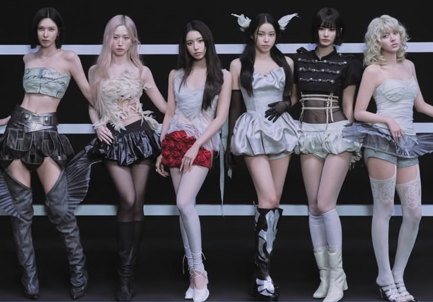

|
Website RivanIt's Me.
|
|
| Beranda | Tentang Aku | Sekolahku | Syair Lagu | |
LOUD
You told me to shh, but you make me wanna love you loud You told me to shh, but you make me wanna love you loud  |
Tautan eksternal |
| © Rivan Adi Mulya, 2026. | |